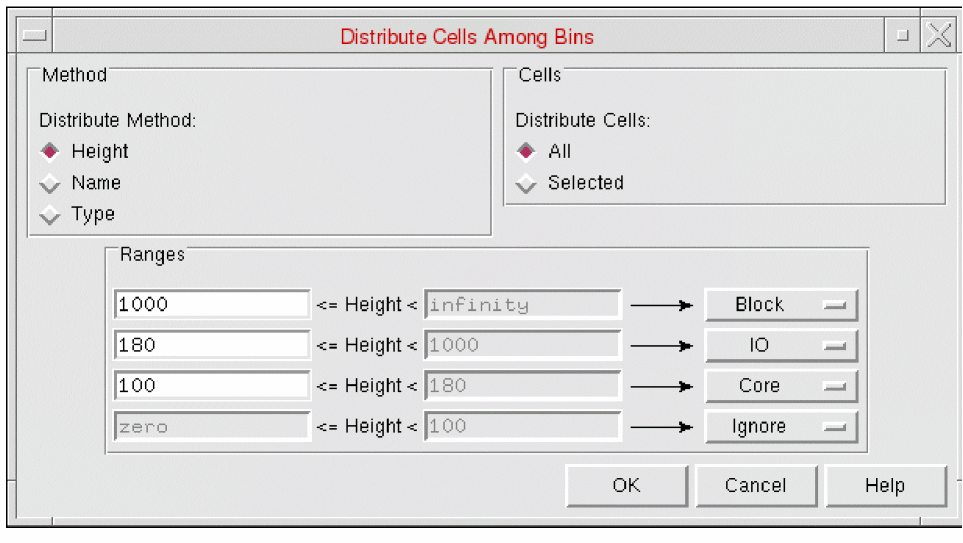
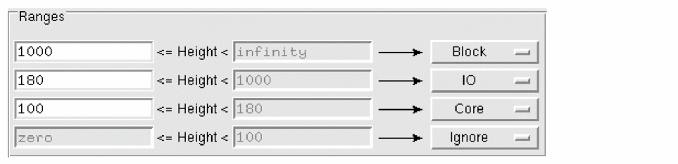
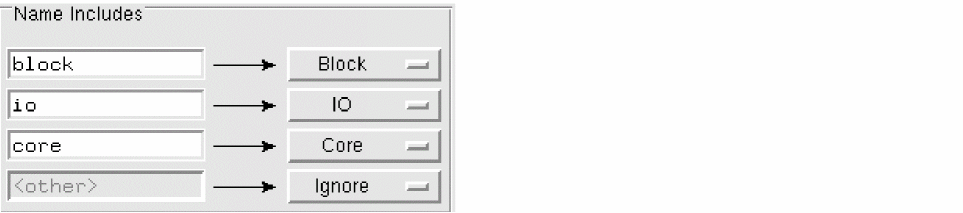
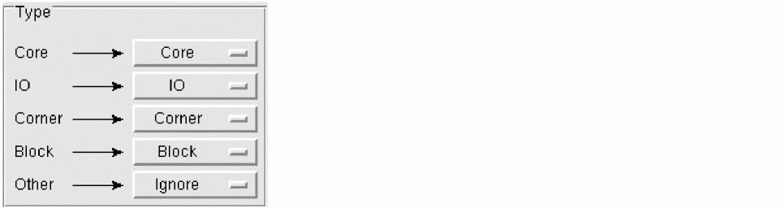

Distributing Cells into Bins in Abstract Generator
Use the Distribute Cells Among Bins form to distribute cells among the system and user bins according to cell height, name, or type.
-
Choose Cells – Distribute to open the Distribute Cells Among Bins form.
 - The Method group options allow you to specify the criteria you want to use. Choose from Height, Name and Type.
-
Selecting the Height method changes the lower part of the form to display the following:
You can specify a series of height ranges in μ, and the bins to which cells falling within a particular range are to be moved. To ensure that no cells are missed, only the lower bound of each range is editable. When you change the lower bound of one range, the upper bound of the next range down is adjusted automatically. -
Selecting the Name method changes the lower part of the form to display the following:
You can specify strings of characters and target bins for cell names containing those strings. For example, the settings shown above would move all the cells with names that include the string block to the Block bin, those including the string io to the IO bin, and so on. Any cells not covered by specific criteria fall into the “other” category and are moved to the bin specified. -
Selecting the Type method changes the lower part of the form to display the following:
Using this form, you can distribute the cells to other system and user bins. The Type method distribution is based on theCellTypeattribute of a layout cell on OpenAccess.
The first column represents theCellTypeattribute. By default, theCellTypeattributes in the first column are mapped to the corresponding system bins in the second column. The choices in the second column corresponding to a specific type are restricted to the user-defined and system bins of the same type. For example, if myBin is a user-defined bin of the type Block, myBin would be available for selection with the Block system bin in the second column. For cellviews with an unknownCellType(Other), all system and user-defined bins come up as options in the Ignore cyclic list. - In the Cells group, select whether you want to distribute All the cells currently displayed in the Cell pane or limit the operation to the set of cells Selected when you opened the form.
- Click OK to distribute the cells when you are satisfied with the height ranges.
Related Topics
Distribute Cells Among Bins Form
Return to top